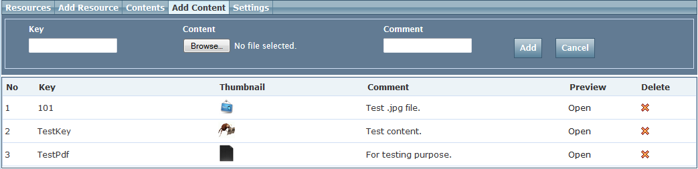

This document provides an overview of Templar’s globalization features and flow
If you have comments /queries about this documentation, email them to:
1. Templar Globalization Support
2. Defining Culture
Culture Resource
Culture Content (files)
Culture Settings
Date Time Settings
Monetary Settings
Number Settings
Month Names
Day Names
Miscellaneous Settings
Additional Information
3. Different levels of defining culture
Widget Level Culture
Global Level Culture
Site Level Culture
WidgetInstance Level Culture (This will get deprecated from v1.6 onwards)
4. Culture Settings resolution at execution time
5. Culture Resource/Content resolution at execution time
Globalization is the process of designing and developing applications that function for multiple cultures. It enables applications to adopt their display interface both visual and textual depending on the origin of request or some preconfigured rules.
Templar Globalization via culture offers a way for applications and\or widget to adopt their content to a specific country and\or language. Templar enables customized cultures to be created. A single instance of culture has format settings such as date, time, currency and number formatting information. A culture would also have translated language content and resources like images, media and other files for a particular country and\or language setting.
1. Resources - text based key value pairs listing and their management options
2. Content - all culture based files and their management
3. Settings - date, numbers, money and other format settings
Templar allows defining globalization culture at 4 different levels. At every level adding / updating a culture has a very similar experience. This also holds true for flow of inserting culture information to different level. Let’s take a look at adding information of culture en-US. We will look at listing interface & creating culture at different levels later on.
Add Culture – allows new culture creation by selecting a country and\or language.
Update Culture – allows current cultures to be compared and updated with existing cultures in the current deployment. Also allows remote comparison and update of cultures if the user has access to a remote Templar deployment.
Created on and Last published – displays information about culture create date and time span since last publish.
Load – this drills down into the current culture and displays all its details along with a management interface fort Upload - allow culture to be updated with an external culture set upload
Download – allows the existing culture to be downloaded as a zip which can be saved for backup or to create culture(s) in different deployment
History – flow for viewing existing culture versions and also allows new version creation. It also has a diff feature where you can compare an older version of the culture with the current version
Publish – this allows the complete culture to be published to live
Delete – allows culture deletion. Please note this would delete all versions (including live version) and history for the culture so please use this feature with caution
Resources are string which are meant to be change/displayed in context of culture it is viewing
Key for culture resource is unique at one level of culture definition.
Figure above shows listing of culture resource keys and their values in selected ‘en-US’ culture
Content are the files needs to be varying according to culture.
E.g. Image containing text inside it. Or Terms are condition page in particular language.
Key for culture resource is unique at one level of culture definition.

Figure above shows listing of culture content keys and their values in selected ‘en-US’ culture.
This section shows all the defined settings for the selected culture.
Load Default helps populate initial default value, Dropdown list enlist few of default values mostly used.
Settings need to be explicitly saved.
Culture inheritance option (new)
If Culture is defined at site level, & site already has same culture added from global cultures. Then Templar provides option to inherit settings from global culture. So making changes in global cultures settings will impact settings of all corresponding inherited cultures in site.
1. Date Time Settings
2. Monetary Settings
3. Number Settings
4. Month Names
5. Day Names
6. Miscellaneous Settings
7. Additional Information
New Feature: Smart default values
Post version V1.6 we have added support for default values. When new culture is created, default values for the culture settings are automatically populated.
Even after creation, at any given point if culture needs to load default settings "Load Defaults" button is provided.
Templar allows defining globalization culture at 4 different levels,
Widget Level
Global Level
Site Level
WidgetInstance Level
Purpose of allowing culture definition at different levels is to allow desired customization of the flow with full reuse of common functionality. Details that are common across applications should be setup at the global level and site specific changes should be done at the site level. Finally Inheritance is supported from global to site level only.
At every level there is support for -
Add / Update cultures.
Uploading / downloading resources/content/ settings.
Publish culture – to have design & live separation
Widget level cultures are root in hierarchy of culture resource/content /setting resolution. Widget level defines default keys & values for any given culture. Widget Level cultures can be managed through Manage Widget Listing in Admin Tab.
Prerequisite: For defining Widget level culture, widget needs to be already registered with Templar framework.
Step 1: Login into Templar & Go to Admin Tab
Step 2: Go to Manage Widgets
Step 3: Select widget for which you want to define cultures.
Note : You can’t define culture for Framework in built widgets.
Publish & download link for widget culture only appears when culture is defined for widget.
Step 4: Once culture listing is displayed for current widget. You can now add new culture or load existing culture for editing content.
Step 5: Rest of steps are common to defining culture.
Global level cultures are top second in hierarchy of culture resource/content /setting resolution. Global level defines default keys & values for any given culture, which can be added to multiple sites for inheritance purpose. Global Level cultures can be managed through Global Cultures in Global Tab.
Step 1: Login into Templar & Go to Global Tab.
Step 2: Click on global cultures to get listing.
Step 3: You can perform following action at this screen
Add new Culture
Load existing culture for editing
Upload or Download entire single culture
View versions/ history of cultures
Publish culture
Step 4: After this operations related to culture content/setting/resources are same as mention at start of defining culture
Site level cultures are top third in hierarchy of culture resource/content /setting resolution. Site level culture is meant to override settings/resources for inherited Global level definition (if any). Or completely define new culture specific to site. Site Level cultures can be managed through editing site details.
Step 1: Login into Templar & Goto site Listing
Step 2: Select Site for which you want to define site level culture
Step 3: Go to Globalisation Tab
Step 4: Inherit Global culture to site (It is not mandatory to inherit from global culture)
Step 5: Define new site level culture
You can define/override multiple sitelevel culture & also can keep them active / deactive individually for site level.
After defining you can also select default culture for site.It will be served when invalid request or request for a culture whichis not present /added to site is made. Site is viewed in default culture. Once culture is defined rest everything for configuring is same as defining culture.
By default culture is detected for every request from accept header which all modern browser send.
By selecting culture from dropdownlist named "Select Culture to Enforce", you can also force site to viewed in one culture, irrespective of browser’s request for a particular culture.
New Feature: Option for culture setting inheritance at Site Cultures
Most of the time we require to change particular Resource or Content at Site Level culture by defining Site Level culture. After defining Site Level culture, culture settings for site level culture were independent of global culture. Changing global culture won’t affect site culture.
Post version V1.6 we have added support for culture setting inheritance for site cultures. Whenever culture (e.g. "en-US") is defined at site level & same culture is present at Global level too, you will see “Inherit from global” checkboxes on every tab to inherit settings from global. So now changing global culture will affect all site level Cultures or parts of Culture who have inherited from Global Cultures.
Inheritance of culture setting additional information behaves similar to culture resource & culture content.
WidgetInstance cultures are the last in hierarchy of culture resource/content /setting resolution. WidgetInstance level only allows us to override string resources for cultures that are defined site level or inherited from global to site. WidgetInstance level culture can be defined per instance (Independent of other instances of widget on same or different page) of widget on page.
The plan for deprecating this feature is to simplify content translation with an easy way to know what all is being used. However this functionality can still be achieved by enabling widgets to configure the keys they want to render across instances. All these keys would need to be defined at the site level.
You can define instance level culture from designer page.
Step 1: Login into Templar & Load Site
Step 2: Open page in designer mode whose instance needs to be overridden.
Once selected, all cultures applicable to site are enlisted, Select particular for which value needs to be overriden.
This widget has got "*ChangeLanguage" key from site level which itself has been inherited from *Global.
We can change its value only for this instance.
These WidgetInstance override changes get publish when site is published.
To understand how culture resolution work, assume site has en-GB, pt-BR, *es-MX *(Doesn't matter which level it is defined site level or global level). Site has es-MX as default culture.
Suppose request is made for culture en-GB, *pt-BR *lookup order for cultures is created.
| If auto-detect is enabled for site en-GB (Browser requested culture) en (Neutral Culture if defined for site). pt-BR (Browser requested culture) pt (Neutral Culture if defined for site). es-MX (Site’s default culture). es (Neutral default culture). | If hi-IN culture is enforced on site hi-IN (Enforced culture) hi (Enforced Neutral culture) |